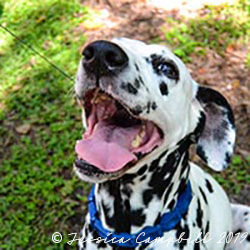
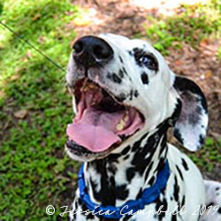
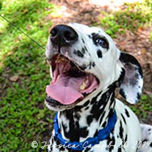

Image Gallery


 



These images are shared with permission by Jessica Campell through Creative Commons licensing.

These images are shared with permission by Jessica Campell through Creative Commons licensing.